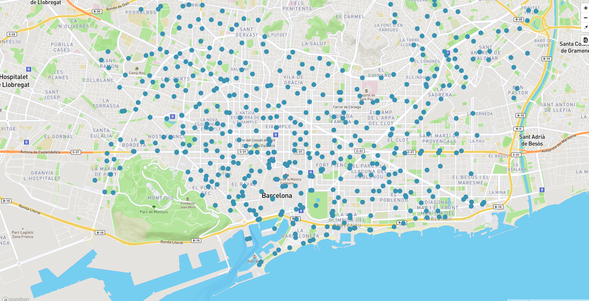

Cómo publicar datos en un formato geojson a teselas vectoriales (mapbox online)
Crear cuenta en Mapbox
Visitar la página https://www.mapbox.com/signup/ y crear una cuenta gratuita.
Subir GeoJSON a Mapbox
Hacer login en la cuenta de Mapbox y seleccionar primero la opción de Studio y luego la pestaña de Datasets ó también se puede ir directamente desde https://www.mapbox.com/studio/datasets/.
En el apartado de Datasets es donde se pueden subir los datos o crear un conjunto de datos desde cero.
Para subir un cojunto de datos presionar el botón de New dataset. Seleccionar la pestaña de Upload en la ventana que se despliega y arrastrar o seleccionar el archivo que se desea subir.
Los formatos de archivos soportados son: GeoJSON, JSON y CSV.
En la carpeta downloads encontrar algunos archivos en formato GeoJSON. Subir los archivos 08019_carril_bici, 08019_punts_ancoratge_bicicletes y 08019_stations. Al subir los archivos renombrarlos a carril_bici, punts_ancoratge_bicicletes y stations respectivamente.
Para poder dar estilo y utilizar los datos primero hay que convertilos en un Tileset. Para ello presionar el botón de Menu y seleccionar la opción de Export to tileset. En la ventana que se despliega seleccionar la opción de Export to a new tileset y presionar el botón de Export.
Visualizar los datos en el visor
Modificar el archivo barcelona.html para que contenga el siguiente código:
1 2 3 4 5 6 7 8 9 10 11 12 13 14 15 16 17 18 19 20 21 22 23 24 25 26 27 28 29 30 31 32 33 34 35 36 37 38 39 40 41 42 43 44 45 46 47 48 49 50 51 52 53 54 55 56 57 58 | <!DOCTYPE html> <html> <head> <meta charset="UTF-8"> <meta name="viewport" content="width=device-width, initial-scale=1"> <title>Mapa VT</title> <script src='https://api.tiles.mapbox.com/mapbox-gl-js/v0.49.0/mapbox-gl.js'></script> <link href='https://api.tiles.mapbox.com/mapbox-gl-js/v0.49.0/mapbox-gl.css' rel='stylesheet' /> <link href='https://mapbox-gl-inspect.lukasmartinelli.ch/dist/mapbox-gl-inspect.css' rel='stylesheet' /> <script src='https://mapbox-gl-inspect.lukasmartinelli.ch/dist/mapbox-gl-inspect.min.js'></script> <style> html, body { margin: 0; height: 100%; } </style> </head> <body id='map'> <script> mapboxgl.accessToken = 'pk.eyJ1IjoiYm9sb2xsbyIsImEiOiI3MDlqRnJJIn0.m-zCTI_UaEOCiCakGUDwcw'; var map = new mapboxgl.Map({ container: 'map', // id del elemento HTML que contendrá el mapa style: 'mapbox://styles/mapbox/streets-v9', // Ubicación del estilo center: [2.175, 41.39], // Ubicación inicial zoom: 13, // Zoom inicial bearing: -45, // Ángulo de rotación inicial hash: true // Permite ir guardando la posición del mapa en la URL }); // Agrega controles de navegación (zoom, rotación) al mapa: map.addControl(new mapboxgl.NavigationControl()); // Agregar el control de inspección map.addControl(new MapboxInspect()); map.on('load', function () { map.addSource('stations', { type: 'vector', url: 'MAP ID DEL TILESET' }); map.addLayer({ 'id': 'stations', 'type': 'circle', 'source': 'stations', 'layout': { 'visibility': 'visible' }, 'paint': { 'circle-radius': 8, 'circle-color': 'rgba(55,148,179,1)' }, 'source-layer': 'stations' }); }); </script> </body> </html> |
Para obtener el Map ID del tileset seleccionar la pestaña Tilesets y presionar el botón Menu de la capa de stations. Copiar el Map ID.
Remplazar donde dice MAP ID DEL TILESET por el id copiado. Ejemplo de identificador mapbox://bolollo.cjmtjlsp30e2232lk64u3a3zm-5dzl6
Recargar la página del mapa para ver los puntos de las estaciones de Bicing en el mapa.
 Resultado visor con estaciones de Bicing